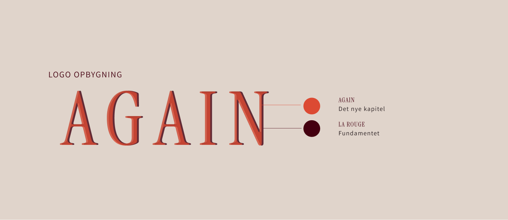
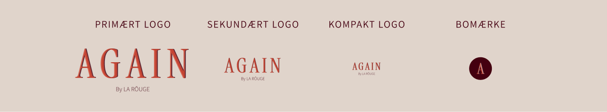
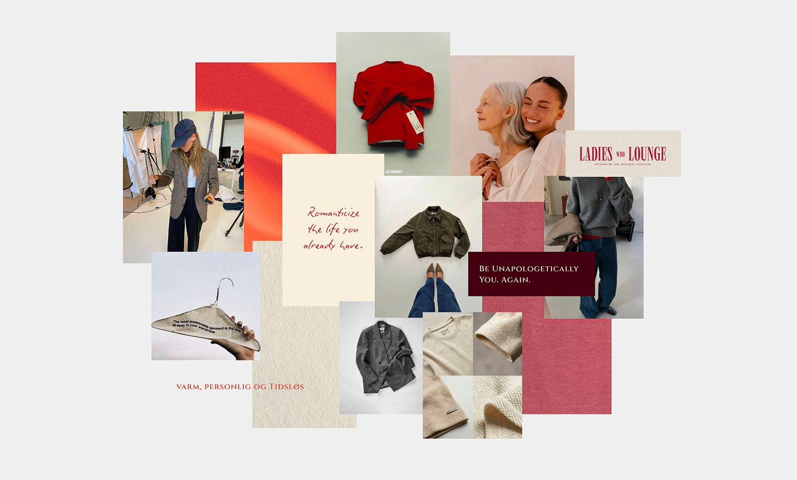
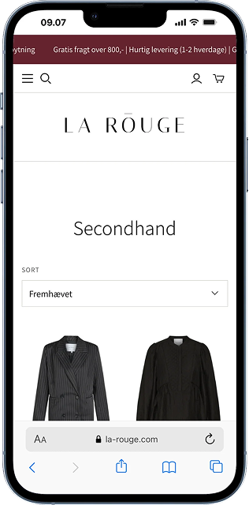
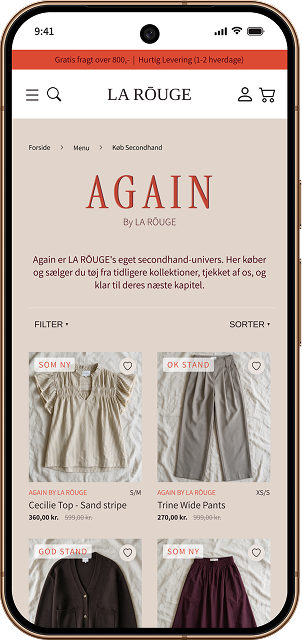
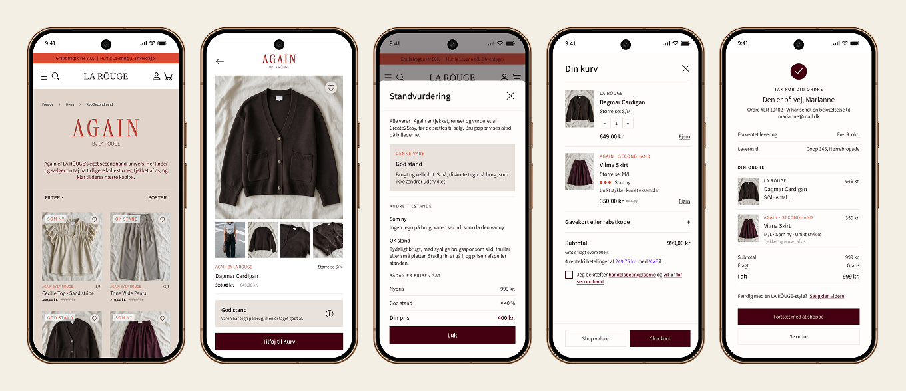
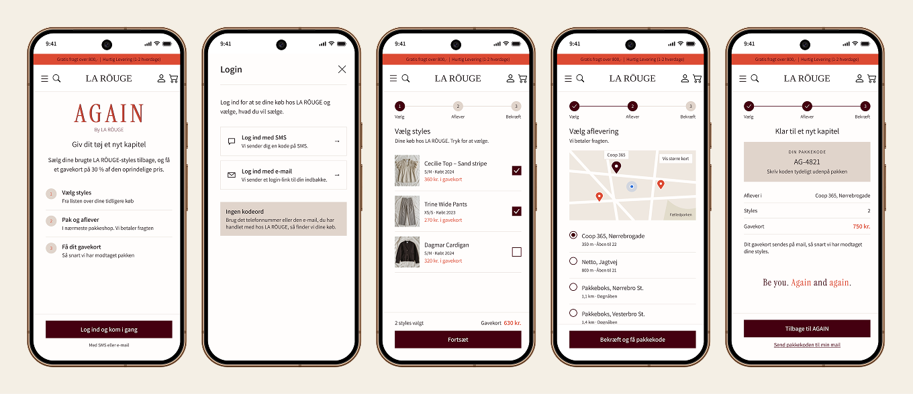
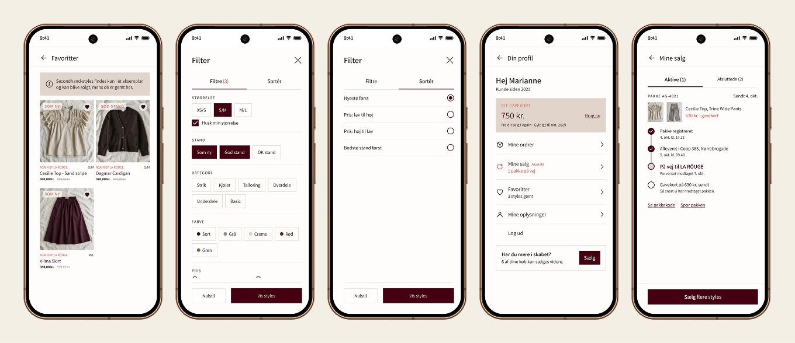

AGAIN by LA RŌUGE.
Tøjets næste kapitel.
LA RŌUGE sælger allerede brugt tøj, men kun få kunder ved det. De fleste sælger deres gamle LA RŌUGE-styles på Vinted, og nye besøgende forlader secondhand-siden igen uden at købe.
Vi gav LA RŌUGEs secondhand sit eget navn, sin egen identitet og to nye brugerrejser: én for kunden, der vil sælge, og én for kunden, der vil købe. Resultatet er subbrandet AGAIN, et branddeck og en klikbar prototype.
Jeg havde særligt fokus på sælgerflowet og brandidentiteten, herunder moodboard og farver. AI er brugt som sparringspartner.

AGAIN · Logo-opbygningSecondhand fandtes allerede. Kunderne opdagede det bare ikke.
Vi tog udgangspunkt i LA RŌUGEs egne salgstal og kundedata. Secondhand var en lille funktion gemt i menuen, uden egen stemme og uden en grund til at blive. Kunderne havde lysten til at sælge, men valgte andre platforme, og trafikken til secondhand-siden blev sjældent til ordrer.
Der mangler kendskab, incitament og en nem brugerrejse.
To kvinder. Ét stykke tøj.
LA RŌUGEs kernekunde er omkring 47 år og har skabet fuldt af brandets tøj. Hun køber sjældent brugt, så hun er vigtigst som sælger. Tallene viste samtidig, at yngre kunder køber langt mere secondhand online. For dem er brugt LA RŌUGE en vej ind til et brand, de ellers ikke ville betale fuld pris for.
Derfor designede vi til to roller: sælgeren og køberen.
Sælgeren
Køberen
Fra funktion til univers.
AGAIN samler de to roller i ét kredsløb. Sælgeren vælger styles direkte fra sin ordrehistorik og får 30 % af prisen i gavekort. LA RŌUGE tjekker, renser og reparerer tøjet, og køberen får kvalitet til en lavere pris med brandets garanti. Gavekortet trækker sælgeren tilbage til LA RŌUGE, og salget bliver hos brandet i stedet for på Vinted.
Giver tøjet videre
Vælger fra ordrehistorikken, uploader og får 30% af salgsprisen.
Giver den et nyt kapitel
Finder tidløs kvalitet til en mere tilgængelig pris med tryghed.
Et nyt brand med samme DNA.
Vi valgte en Branded House-struktur, så AGAIN supplerer LA RŌUGE i stedet for at konkurrere med det. Afsenderen “By LA RŌUGE” er den tryghed, Vinted ikke kan give. Bordeaux og den feminine serif er arvet fra moderbrandet, mens den varme orange og en mere uformel tone er nye.
Logoet er bygget i to lag: bordeaux som fundamentet og orange som tøjets nye kapitel. Moodboardet satte retningen: varm, personlig og tidløs.


To primære farver giver identitet og genkendelighed. Tre sekundære skaber balance, baggrunde og kontrast.
Samme webshop. Et helt andet indtryk.
Før var secondhand en neutral produktliste. Med AGAIN får universet sin egen forside med logo, stemme og en tydelig standvurdering på hvert produkt, så køberen ved præcis, hvad hun får.


Brandet omsat til to rejser.
Begge flows er bygget for at fjerne friktion og skabe tryghed. Køberen kan se præcis, hvilken stand varen er i, og hvordan prisen er regnet ud. Sælgeren logger ind med SMS eller e-mail, vælger styles fra sine tidligere køb, afleverer i nærmeste pakkeshop og får sit gavekort, når pakken er modtaget.
Køber-flow
Fra AGAIN-forsiden over produktside og standvurdering til kurv og ordrebekræftelse.

Sælger-flow
Tre trin: vælg styles, aflever pakken og få dit gavekort.

Ekstra features
Favoritter, filtre på stand og størrelse, og en profil hvor sælgeren kan følge sin pakke og se sit gavekort.

Løsningen svarer på det, researchen viste.
Konceptet er vurderet op mod de tre problemer fra vores research: manglende kendskab, manglende incitament og en besværlig brugerrejse. Et naturligt næste skridt vil være at teste begge rejser med kunder fra hver målgruppe, især om standvurderingen skaber nok tryghed, og om 30 % i gavekort er nok til at flytte salget væk fra Vinted.
Samme model, ny måde at vise den på.
Vi valgte ikke at bygge en ny secondhand-model, for den findes allerede hos LA RŌUGE. I stedet ændrede vi måden, den bliver samlet og præsenteret på. Køberrejsen er bevidst en klassisk købsrejse, så secondhand-oplevelsen stadig er nem og genkendelig – bare med AGAINs eget univers.
Fire veje til mere værdi.
AGAIN skaber værdi for LA RŌUGE på fire måder: Produkterne får længere levetid, kunderelationen fortsætter efter købet, flere – især en yngre målgruppe – får adgang til brandet, og LA RŌUGE beholder kontrollen over, hvordan produkterne præsenteres og sælges. Vurderingen bygger på LA RŌUGEs egne tal og på, at 47 % af de 18–49-årige købte secondhand online i 2024.
- Laura Lynge Nielsen
- Mia Poder Olesen
- Cecilie Vestergaard Andersen